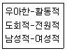
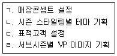
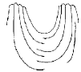
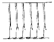
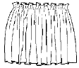
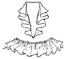
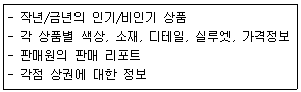

패션머천다이징산업기사 (2014-08-17 기출문제)
1과목: 패션마케팅
1. 마케팅 관리자가 표적고개의 욕구충족을 통해서 기업목적을 달성하기 위해 사용하는 마케팅 수단인 마케팅 믹스가 아닌 것은?
- 제품(product)
- 가격(price)
- 촉진(promotion)
- 프로그램(program)
(정답률: 알수없음)

2. 패션 주기의 절정으로 가장 대중적인 스타일이 되는 시기는?
- 도입기
- 성장기
- 성숙기
- 쇠퇴기
(정답률: 알수없음)
3. 제조업 패션머천다이징에 있어 상품기획의 순서로 가장 적합한 것은?
- 머천다이징 콘셉트→표적시장 기획→상품구성→디자인개발→품평회
- 머천다이징 콘셉트→표적시장 기획→디자인개발→상품구성→품평회
- 표적시장 기획→머천다이징 콘셉트→디자인개발→상품구성→품평회
- 표적시장 기획→머천다이징 콘셉트→상품구성→디자인개발→품평회
(정답률: 알수없음)
4. 패션산업의 특성으로 틀린 것은?
- 정보지향적 산업이다.
- 위험부담률이 높은 산업이다.
- 아웃소싱 의존도가 높은 산업이다.
- 대기업 중심의 산업이다.
(정답률: 알수없음)
5. 표지셔닝의 기분은 자사제품의 어떤 특징을 타사제품과 차별화시켜 소비자에게 어떻게 어필(appeal)할 것인가에 따라 결정된다. 다음은 무엇을 기준으로 한 포지셔닝인가?

- 제품속성에 따른 포지셔닝
- 이미지에 의한 포지셔닝
- 용도에 의한 포지셔닝
- 제품사용자의 특성에 의한 포지셔닝
(정답률: 알수없음)
6. 패션제품의 가격을 결정하기 위해, 먼저 표적 소비자들이 그 회사의 제품에 부여하는 가치의 정도를 조사하여 이에 상응한 제품가격을 목표 가격으로 설정하고 제품을 기획하는 가격 결정방법은?
- 원가중심 가격결정
- 소비자중심 가격결정
- 경쟁제품중심 가격결정
- 소매가중심 가격결정
(정답률: 알수없음)
7. 소비자 연구를 위한 여러 가지 문제 중 구매동기 요인으로 틀린 것은?
- 구매동기 분석
- 구매주기 확인
- 구매동기에 영향을 미치는 요인의 평가
- 상품과 상점 선호도의 동기평가
(정답률: 알수없음)
8. B.I(brand identity) 작업에 대한 설명으로 가장 옳은 것은?
- 고객의 입장에서 본 개념이다.
- 브랜드 설정을 위해 상표, 로고의 심벌마크, 심벌컬러 등을 설정하는 작업이다.
- 자사의 독창적인 VMD를 통해 점포이미지를 강조하는 전략이다.
- 브랜드 콘셉트를 표현할 수 있는 문구를 설정하는 작업이다.
(정답률: 알수없음)
9. 마케팅 믹스에서 판매촉진 활동에 해당되지 않는 것은?
- 홍보
- 인적판매
- 광고
- 유통구조
(정답률: 알수없음)
10. 패션기업의 관계마케팅(relationship marketing)에 대한 설명으로 옳은 것은?
- 새로운 고객 창출에 초점을 맞추고 있다.
- 고객의 생애가치를 극대화하고자 하는 경영방식으로 정의된다.
- 소비자의 오감과 인지, 감성, 행동 유형 등을 적절히 통합하는 마케팅 노력이다.
- 기업 간 상호협력을 기초로 이루어진다.
(정답률: 알수없음)
11. 비교적 많은 수의 기업들이 차별적 마케팅을 가지고 경쟁을 하는 형태는?
- 독점
- 과점
- 독점적 경쟁
- 순수 경쟁
(정답률: 알수없음)
12. 표적시장 선정에 유용한 시장세분화 변수와 그 예로 적합하지 않는 것은?
- 인구통계적변수-성별, 소득
- 사이코그래픽 변수-연령, 직업
- 형태적 변수-구매기회, 사용률
- 지리적 변수-인구밀도, 기후
(정답률: 알수없음)
13. 다음 중 수요의 가격 탄력성이 높은 경우는?
- 고급 백화점에 디스플레이 된 상품
- 고소득층을 상대로 하는 고급상품
- 패션 수용도가 절정에 달한 상품
- 품질이나 상표 명성이 높은 상품
(정답률: 알수없음)
14. 패션 브랜드 네이밍(brand naming) 시 주의할 점이 아닌 것은?
- 브랜드 네이밍은 상품과 어울리는 연상이 바로 되는 것이 좋다.
- 브랜드 네이밍 시 기업 내부의 의견보다는 주 고객의 의견을 반영하는 것이 좋다.
- 브랜드 네이밍은 소리보다는 의미가 중요하다.
- 쉽게 기억되고 빨리 전파될 수 있는 브랜드 네이밍을 하는 것이 좋다.
(정답률: 알수없음)
15. 마케팅에서 포지셔닝 맵(positioning map)의 유용성에 해당하지 않는 것은?
- 틈새시장 파악
- 자사제품의 경쟁적 포지션 파악
- 경쟁 강도의 파악
- 자사제품의 시장점유율 파악
(정답률: 알수없음)
16. 고급 상표를 열망하지만 가격에 민감한 소비자를 대상으로 디자이너 상표보다 저렴한 가격대로 디자이너 이름을 알리는 상표는?
- 내셔널 브랜드(national brand)
- 브릿지라인 브랜드(bridge brand)
- 중간상 브랜드(private brand)
- 라이센스 브랜드(license brand)
(정답률: 알수없음)
17. 구매 후 소비자 불평 행동 중 공적 행동에 해당되지 않는 것은?
- 회사에 직접 배상요구
- 구매 중지 및 구매 보이코트
- 소비자 단체 등에 불평
- 배상을 위한 법적 조치 취함
(정답률: 알수없음)
18. 유통업자가 자체적으로 제품을 기획하고 제조(혹은 위탁제조)하여 개발한 상표는?
- 프라이빗 브랜드(private brand)
- 라이센스 브랜드(license brand)
- 내셔널 브랜드(national brand)
- 디자이너 브랜드(designer brand)
(정답률: 알수없음)
19. 표적시장 선정 유형에 대한 설명으로 틀린 것은?
- 제품 전문화는 특정 고객 집단의 여러 가지 욕구를 충족시키는데 집중한다.
- 단일시장 집중은 패션기업이 마케팅 노력을 하나의 세분시장에 집중하기 위해 표적시장을 정하는 경우이다.
- 선택적 전문화는 패션기업들이 몇 개의 세분시장을 선정하여 복수의 상표를 포지셔닝시키는 유형이다.
- 전체 시장확보 유형은 패션시장에서 실질적으로 수행되기 어렵다.
(정답률: 알수없음)
20. 패션상품을 분류할 때 패션수용도에 의한 제품분류에 포함되지 않는 것은?
- 베이직 제품
- 트렌드 제품
- 중점 제품
- 뉴베이직 제품
(정답률: 알수없음)
2과목: 패션소재기획
21. 코드사나 케이블사의 이미지를 가진 굵은 실을 사용하여 마치 수편직한 것과 같은 느낌을 주고, 무늬는 종교적인 의미를 가진 로프, 다이아몬드, 사슴 무늬 등을 자유롭게 조화한 개성있는 스타일의 스웨터는?
- 노르딕 스웨터(nordic sweater)
- 셔틀랜드 스웨터(shetland sweater)
- 페어 아일 스웨터(fair isle sweater)
- 아란 스웨터(aran sweater)
(정답률: 알수없음)
22. 비스코스 레이온 섬유의 대체품으로 개발되어 환경친화적인 소재로서 이용되고 있는 재생섬유는?
- 리오셀
- 플리노직 레이온
- 아세테이트
- 큐프라
(정답률: 알수없음)
23. 소재기획에서 있어서 기존의 제품들을 시각적으로 분류, 분석하고 새로운 제품의 위치를 구체화시키는데 사용하는 도구는?
- 이미지 맵(image map)
- 컬러 맵(color map)
- 소재 맵(fabric map)
- 코디네이션 맵(coordination map)
(정답률: 알수없음)
24. 트렌드와 감성 용어의 연결이 틀린 것은?
- 엘레강스-고상한, 우아한, 여성스러운
- 컨트리-서민적, 자유분방한, 에콜로지
- 모던-전통적인, 역사적인, 민속풍의
- 로맨틱-화려한, 장식적인, 영화 같은
(정답률: 알수없음)
25. 품질검사의 종류 중 검사목적에 따른 분류에 해당되지 않는 것은?
- 원료검사
- 중간검사
- 제품검사
- 샘플링검사
(정답률: 알수없음)
26. 위파일로 경방향의 이랑을 나타낸 면직물로, 두꺼우면서 부드러워 바지, 작업복, 레저복 등에 많이 사용되는 것은?
- 진(jean)
- 코듀로이(corduroy)
- 벨베틴(velveteen)
- 플란넬(flannel)
(정답률: 알수없음)
27. 패션 트렌드 테마의 주요 인자 중 자연보호운동, 재활용, 친환경 등의 사회적 운동으로 환경과 인간 그리고 패션의 관계를 종합적으로 분석하는 것과 관련이 있는 것은?
- 퍼지(fuzzy)
- 에스닉(ethnic)
- 노스탤지어(nostalgia)
- 에콜로지(ecology)
(정답률: 알수없음)
28. 직물의 표면에 요철을 주거나 오톨도톨한 감촉을 주기 위하여 사용하는 가공 방법이 아닌 것은?
- 염축 가공
- 플리스(plisse) 가공
- 엠보스(emboss) 가공
- 캘린더(calender) 가공
(정답률: 알수없음)
29. 트렌드 테마에 따른 소재의 종류 중 컨트리 이미지 소재로만 나열한 것은?
- 코듀로이, 데님, 플란넬
- 새틴, 벨벳, 옥스퍼드
- 조젯, 피케, 개버딘
- 브로우드, 깅엄, 파유
(정답률: 알수없음)
30. 필멘트사를 방적사와 비교한 설명 중 틀린 것은?
- 검유의 균밀도가 떨어진다.
- 표면이 매끈한 편이다.
- 촉감이 차가운 편이다.
- 광택이 있다.
(정답률: 알수없음)
31. 직물에 사용되는 원사의 종류를 선정하거나 제작방법의 지시, 프린터나 무늬의 창조, 색상을 조정하는 스페셜리스트는?
- 패션 디자이너
- 스타일리스트
- 텍스타일 디자이너
- 패션 머천다이저
(정답률: 알수없음)
32. 소재기획의 개념에 대한 설명 중 틀린 것은?
- 순수한 기획과 창의적인 디자인을 포함한 것이다.
- 기존에 있는 소재들 중 몇 가지를 선택하고 그 물량과 구성비를 정하는 과정이다.
- 여러 종류의 일이 단계별로 엮어져 있는 통합적인 작업이다.
- 독창적인 디자인 작업이다
(정답률: 알수없음)
33. 컷파일(cut pile)사로서 솜털이 많고 부드러우면서도 보송보송한 실로 로맨틱하면서 고급스러운 멋을 내는 소재에 사용하는 것으로 적합한 것은?
- 넵사(nep yarn)
- 루프사(loop yarn)
- 담담사(ram-tam yarn)
- 셔닐사(chenille yarn)
(정답률: 알수없음)
34. 다음 중 국제양모사무국에서 선정한 양모제품의 울 마크(woolmark)의 순모율 기준은?
- 30% 이상 50%미만
- 50% 이상 70%미만
- 71% 이상 90%미만
- 99.7% 이상
(정답률: 알수없음)
35. 나일론에 대한 설명 중 틀린 것은?
- 석탄, 물과 공기를 원료로 한다.
- 강도가 크고 매우 질긴 섬유이다.
- 매끄럽고 정전기의 발생도 없어서 안감으로 사용된다.
- 레질리언스가 우수하여 구김이 잘 생기지 않는다.
(정답률: 알수없음)
36. 소재기획에서 고려되어야 할 내용 중 틀린 것은?
- 목표로 정한 시장특성에 대한 구체적인 정보
- 거래처로부터의 주문실적 등을 통한 판매실적
- 국내의 유명 디자이너들의 디자인경향
- 소재에 대한 기술적 정보
(정답률: 알수없음)
37. 소재 선택에서 고려해야 할 조건 중 촉각효과를 살린 재질감과 가장 관계가 있는 조건은?
- 패션 사이클과의 적합성
- 용도ㆍ기능의 적합성
- 품질 안정성
- 실루엣ㆍ디자인의 적합성
(정답률: 알수없음)
38. 소재업체의 소재기획 시 가장 먼저 해야 하는 것은?
- 정보 수집
- 소재방향 결정
- 샘플 제작
- 원형 개발
(정답률: 알수없음)
39. 다음 중 직물의 삼원조직에 해당되지 않는 직물은?
- 도스킨(doeskin)
- 다마스크(damask)
- 포플린(poplin)
- 서지(serge)
(정답률: 알수없음)
40. 소재감성별 분류에 해당되지 않는 것은?
- 클린(clean)
- 웨이트(weight)
- 러프(rough)
- 드라이(dry)
(정답률: 알수없음)
3과목: 유통관리 및 광고
41. 매장구성의 계획요소에 해당되지 않는 것은?
- 색체계획
- 집기계획
- 음향계획
- 판매계획
(정답률: 알수없음)
42. 통합적인 물류시스템 관리를 위해서 실시하고 있는 패션유통정보 시스템이 아닌 것은?
- EOS
- OEM
- EDI
- POS
(정답률: 알수없음)
43. 효율적인 재고관리를 위하여 수행해야 할 과제와 가장 거리가 먼 것은?
- 정확한 상품재고의 파악
- 납기지연 및 결품 방지
- 부동재고의 발생 방지
- 판매원의 서비스 강화
(정답률: 알수없음)
44. 상품구색 수준의 다양성을 나타내는 재고관리단위(KSU)에 대한 설명으로 틀린 것은?
- 스타일이 5, 사이즈가 5, 색상이 4이면 그 품목의 구색 다양성은 14 SKU이다.
- SKU 에는 해당 품목의 스타일, 사이즈 색상 등에 대한 정보가 포함되어 있다.
- SKU의 숫자가 적다면 상품의 주문, 생산, 배송, 진열이 간단하다.
- SKU 숫자가 많은 상품을 모두 취급하다보면 품절이나 과잉재고 등의 위험이 따른다.
(정답률: 알수없음)
45. 대형할인점의 성장배경으로 거리가 먼 것은?
- 낮은 경기 민감도
- 교통환경의 변화
- 가족단위 장보기의 활성화
- 고객의 개성 추구
(정답률: 알수없음)
46. 다음 중 패션홍보의 주요 수단이 아닌 것은?
- 패션업체의 자서전적 소개
- 판매원
- 인터뷰
- 보도자료
(정답률: 알수없음)
47. 패션제품의 분류로 틀린 것은?
- 관여 수준에 의한 분류-베이직, 트렌디, 런닝
- 생활연령별 분류-틴, 어덜트, 실버
- 상품구성에 의한 분류-중점제품, 보완제품, 전략제품
- 구매습관에 의한 분류-편의품, 선매품, 전문품
(정답률: 알수없음)
48. 재고상품 중 러닝 스톡(running stock)에 대한 설명으로 옳은 것은?
- 활발하게 움직이는 상품
- 비교적 움직이는 상품
- 거의 움직이지 않은 상품
- 전혀 움직이지 않고 창고에 들어간 상품
(정답률: 알수없음)
49. 고객의 구매시점에 행해지는 광고를 뜻하며, 판매원을 대신하여 상품정보를 알려줌으로써 편리한 쇼핑이 이루어지도록 지원하고 소비자의 구매를 이끌어 내는 것을 목적으로 하는 수단은?
- POS
- POP
- VMD
- PR
(정답률: 알수없음)
50. 다음 리테일 머천다이징 프로세스 중 가장 먼저 수행해야 하는 업무는?
- 상품구성계획
- 상품관리계획
- 판매예산계획
- 가격전략계획
(정답률: 알수없음)
51. 패션 수용도에 의한 상품 분류 중 패션을 가장 많이 빨리 받아들인 전략적인 상품군은?
- 트렌드 상품
- 베이직 상품
- 뉴베이직 상품
- 프레스티지 상품
(정답률: 알수없음)
52. 패션 홍보에 관한 설명으로 옳은 것은?
- 홍보는 광고에 비해 비용이 비싸다.
- 디자이너에 대한 자서전적 소개는 패션 홍보의 수단이 된다.
- 홍보는 유사 개념인 PR보다 더 넓은 개념이다.
- 소비자들은 홍보보다 광고를 더 객관적이라 생각한다.
(정답률: 알수없음)
53. 패션 제조업체 본사가 직접 자본을 투자하고 인력을 파견하여 운영하는 소매점포 유형은?
- 대리점
- 직영점
- 특약점
- 백화점
(정답률: 알수없음)
54. NMD 프로세스가 옳게 나열된 것은?

- ㄱ→ㄷ→ㄴ→ㄹ
- ㄷ→ㄴ→ㄱ→ㄹ
- ㄴ→ㄷ→ㄱ→ㄹ
- ㄷ→ㄱ→ㄴ→ㄹ
(정답률: 알수없음)
55. 광고 매제유형을 선택할 때 고려해야 할 사항이 아닌 것은?
- 표적소비자의 매체습관에 대하여 알고 있어야 한다.
- 제품의 특성을 고려하여 매체를 선택하여야 한다.
- 메시지의 형태에 따라 각기 다른 매체가 효과적이다.
- 매체선택에 있어서 비용은 절대비용이 가장 중요하다.
(정답률: 알수없음)
56. VMD의 목적이 아닌 것은?
- 점포이미지 향상
- 상품과 브랜드의 이미지 향상
- 상품이나 이미지 차별화 실현
- 상품의 품질향상관리
(정답률: 알수없음)
57. 다음 중 매장관리 영역에 해당되지 않는 것은?
- 적절한 상품진열
- 적절한 물량확보
- 적절한 사입처 선정
- 재고상품의 처분세일
(정답률: 알수없음)
58. 짧은 시간 내에 많은 사람들에게 메시지를 전달할 수 있으나 충분한 설명이 부족하고 제작시간과 예산이 많이 소요되는 광고매체는?
- 라디오 광고
- 잡지 광고
- 옥외 광고
- TV 광고
(정답률: 알수없음)
59. 점포 전략 수립 시 매장 구성에 관한 설명으로 옳은 것은?
- 판매 단가가 높은 상품은 매장 앞쪽에 배치한다.
- 베이직 아이템은 매장 안쪽이나 벽면에 배치한다.
- 무겁게 느껴지는 상품은 매장 앞쪽에 배치한다.
- 코디네이트(coordinate) 되는 아이템들은 분산시켜 놓는다.
(정답률: 알수없음)
60. 유통경로 중 제조업체가 되ㆍ소매상을 소유함으로써 일관된 유통시스템을 이루는 것은?
- 수평적 경로구조
- 수직적 경로구조
- 혼합형 경로구조
- 일반형 경로구조
(정답률: 알수없음)
4과목: 패션디자인론 및 의복구성학
61. 다음 중 수영복에 가장 적합한 재봉사는?
- 면봉사
- 나일론봉사
- 마봉사
- 견봉사
(정답률: 알수없음)
62. 소매 붙임선이 목둘레선부터 A.H 아래로 연결되어 이루어진 소매로 어깨의 관절부위를 피해 체표상의 근육이 움푹 패인 곳을 솔기선이 지나도록 산 소매는?
- 세트 인 솔리브(set in sleeve)
- 기모노 슬리브(kimono sleeve)
- 프렌치 슬리브(french sleeve)
- 래글런 슬리브(raglan sleeve)
(정답률: 알수없음)
63. 톤 인 톤(tone in tone) 배색의 설명으로 옳은 것은?
- 3가지 색의 배색 기법이다.
- 동일 또는 유사한 톤 내에서 색상의 변화를 주는 배색기법이다.
- 단색화법으로 거의 동일 색에 가까운 색을 사용하여 1가지 색으로 보이게 하는 배색 기법이다.
- 여러 색을 단계적으로 서서히 변화시키는 배색기법이다.
(정답률: 알수없음)
64. 패션변화와 기본으로 의복에 표현되어지는 유형 중 의복 장착 시 만들어지는 의복의 외곽선은?
- 트리밍
- 디테일
- 구성선
- 실루엣
(정답률: 알수없음)
65. 의복원형을 종류에 따라 구분했을 때 기본 원형에 해당되지 않는 것은?
- 길(bodice) 원형
- 칼라(collar) 원형
- 소매(sleeve) 원형
- 스커트(skirt) 원형
(정답률: 알수없음)
66. 실의 단면 형태가 원형에 가까워 내마모성이 높으며, 가의 모든 의복에 사용되고 있는 재봉사는?
- 2합사
- 3합사
- 4합사
- 6합사
(정답률: 알수없음)
67. 옷감을 특수한 기법으로 바느질하여 오그려 만든 일종의 장식끈으로 코트의 안단선 장식에 쓰이는 것은?
- 스팽글
- 루싱
- 러플
- 스칼럽
(정답률: 알수없음)
68. 너비가 110cm인 옷감으로 긴소매 슈트를 재단할 때 옷감의 필요량 계산법은?
- 재킷 길이+스커트 길이+소매 길이+시접
- (재킷 길이×2)+(스커트 길이×2)+시접
- (재킷 길이×2)+스커트 길이+소매길이+시접
- (재킷 길이×2)+(스커트 길이×2)+소매 길이+시접
(정답률: 알수없음)
69. 다트의 위치를 이동시켜 새로운 원형을 만드는 과정은?
- 다트 머니플레이션
- 다트 플리츠
- 요크
- 다트 플리스
(정답률: 알수없음)
70. 피계측자가 의자에 앉았을 때 옆 허리둘레선에서 의자바닥까지의 수직길이는?
- 총길이
- 엉덩이 길이
- 밑위 길이
- 바지 길이
(정답률: 알수없음)
71. 아워글래스(Hourglass) 실루엣에 해당하는 것은?
- 오 라인(O line) 실루엣
- 배럴(barrel) 실루엣
- 튜블러(tubular) 실루엣
- 프린세스(princess) 실루엣
(정답률: 알수없음)
72. 허벅지 부위가 너무 타이트 한 팬츠의 보정법으로 가장 옳은 것은?
- 옆선을 내어준다.
- 밑위를 추가한다.
- 밑아래를 늘인다.
- 앞중심선을 내어준다.
(정답률: 알수없음)
73. 셔츠, 타이트, 비숍, 스퀘어 등의 명칭이 주로 사용되는 곳은?
- 칼라(collar)
- 소매(sleeve)
- 네크라인(neckline)
- 스커트(skirt)
(정답률: 알수없음)
74. 의복원형 제도 시 신체 각 부위의 치수를 섬세하게 계측하여 그 치수를 원형으로 표현하는 제도법은?
- 단촌식 제도법
- 장촌식 제도법
- 입체 제도법
- 절충식 제도법
(정답률: 알수없음)
75. 슬리브 헤딩(sleeve heading)에 관한 설명 중 옳은 것은?
- 소매산의 주름을 잡기 위해 사용한다.
- 슬리브 헤딩은 정바이어스로 재단한다.
- 슬리브 헤딩은 소매둘레선의 완성선에 박는다.
- 폭 1cm, 길이 10cm 이내 재단한 천을 사용한다.
(정답률: 알수없음)
76. 다음 장식방법 중 턱(tuck)을 표현한 것은?




(정답률: 알수없음)
77. 소매 원형의 필요 치수가 아닌 것은?
- 길 원형의 앞 진동 둘레
- 길 원형의 뒤 진동 둘레
- 소매길이
- 가슴둘레
(정답률: 알수없음)
78. 재봉사에 대한 설명 중 틀린 것은?
- 방적사는 꼬임이 많으면 처음엔 강도가 약해지지만, 일정한 수에 도달하면 강도가 높아진다.
- 방적사의 번수는 실의 굵기와 반비례한다.
- 재봉사의 균제성이 나쁜 경우 봉사가 자주 절단 되거나 실땀이 불규칙하게 형성된다.
- 재봉기를 통해 스티치가 형성되는 사이에 생기는 마찰은 재봉사 강도 손실의 주원인이 된다.
(정답률: 알수없음)
79. 재봉사의 소비량에 영향을 받지 않는 것은?
- 노루발의 종류
- 옷감의 두께
- 솔기의 폭
- 스티치의 길이
(정답률: 알수없음)
80. 다음 중 퍼커링 발생 원인과 가장 거리가 먼 것은?
- 바늘과 재봉사가 옷감을 구성하고 있는 실보다 두꺼울 때
- 천과 다른 종류의 재봉사를 사용했을 때
- 밀도가 높고 얇은 옷감을 사용했을 때
- 윗실과 밑실의 장력이 같을 때
(정답률: 알수없음)
5과목: 패션정보분석
81. 패션트랜드 정보 수집 분석에서 사진이나 일러스트레이션을 사용하는 것이 가장 적합한 것은?
- 스타일의 경향
- 소재의 경향
- 색채의 경향
- 디테일의 경향
(정답률: 알수없음)
82. 다음 중 패션정보의 시계열 매카니즘상 가장 나중에 발표되는 정보는?
- 컬레션 및 제품 전시회
- 섬유 소재 전시회
- 서계 유행색 결정
- 각국 유행색 결정
(정답률: 알수없음)
83. 다음 정보들을 분석하여 얻을 수 있는 정보는?

- 경쟁브랜드 정보
- 패션 트렌드 정보
- 소매점 정보
- 라이프스타일 정보
(정답률: 알수없음)
84. 과거보다 현재까지의 흐름을 연도별, 반기별, 분기별 혹은 월별로 관찰하여 앞으로 나타날 상황을 미리 감지하는 예측법은?
- 라이프사이클 예측법
- 시계열 예측법
- 수요계층 예측법
- 시각화 예측법
(정답률: 알수없음)
85. 시장분석 기법 중 표적집단의 실체와 자사 개발제품이 경쟁적 우위를 점유할 수 있는 핵심이 무엇인지를 파악할 수 있는 것은?
- 잠재구매자 분석
- 경쟁브랜드 분석
- 예측구매자 분석
- 실질구매자 분석
(정답률: 알수없음)
86. 다음 중 패션정보분석 방법에 해당되지 않는 것은?
- 통계분석 방법
- 사실분석 방법
- 징후분석 방법
- 상관분석 방법
(정답률: 알수없음)
87. 패션트렌드의 정보분석 요소가 아닌 것은?
- 패션 테마
- 색채의 경향
- 실루엣의 경향
- 디자이너 마인드
(정답률: 알수없음)
88. 정보를 수집하는 과정 중 효과를 거둘 수 있는 방법이 아닌 것은?
- 수집목표를 분명히 설정한다.
- 필요정보가 무엇인지를 명확히 한다.
- 사용목적에 따라 도입하여 적절히 활용한다.
- 모든 정보를 정리, 분석, 보관한다.
(정답률: 알수없음)
89. 패션 트렌드 변화에 영향을 주는 요인 중 종교, 예술, 지식, 도덕 등이 학습되어 나타나는 것은?
- 사회적 요인
- 경제적 요인
- 정치적 요인
- 문화적 요인
(정답률: 알수없음)
90. 패션 컬러 정보 제공 기관이 아닌 것은?
- 빌비에
- CAUS
- 프로모스틸
- 인터스토프
(정답률: 알수없음)
91. 소비자의 충동구매 패턴에 대한 설명으로 틀린 것은?
- 암시적 충동구매-구매자가 상품에 대한 정보를 많이 입수하고 구매하는 행동
- 기억 충동구매-점포 내 제품이나 장보를 통해 자신이 사려던 물건임을 기억해 내어 구매하는 행동
- 계획적 충동구매-상점에서 가격 할인 쿠폰 등의 특전을 기대하고 구매하는 행동
- 순수 충동구매-당장 필요가 없는 제품을 순간적인 충동에 의해 구매하는 행동
(정답률: 알수없음)
92. 색채정보에 관한 설명으로 틀린 것은?
- 소비자 착용색을 조사한다.
- 패션정보 중 가장 늦게(6개월 전) 결정된다.
- 색상, 명도, 채도를 구별하여 색상환과 톤 표를 작성한다.
- 색상, 명도, 채도의 전체적인 변화경향을 파악한다.
(정답률: 알수없음)
93. 정보분석 방법 중 여러 가지 특성별 형태에 따라 정보를 분석하는 것은?
- 통계분석 방법
- 패턴분석 방법
- 상관분석 방법
- 추리분석 방법
(정답률: 알수없음)
94. 6~10명 정도의 소규모의 소비자들을 대상으로 특정 주제와 관련된 자연스러운 대화나 토론을 통해 아이디어를 도출하고 정보를 수집하는 조사방법은?
- 설문조사
- 심층면접
- 표적집단면접
- 실험조사
(정답률: 알수없음)
95. 다음 중 소비자 조사에 해당되지 않는 것은?
- 인기상품 조사
- 광고효과 조사
- 교육 및 소득수준 조사
- 소비자의 착용경향조사
(정답률: 알수없음)
96. 다음 중 라이프스타일 파악을 위한 A.I.O 연구에서 사용되는 요소 중 의견에 해당하는 것은?
- 취미, 사회적 사건, 쇼핑, 스포츠
- 오락, 패션, 음식, 매체
- 정치, 사회, 경제, 교육
- 소득, 직업, 가족규모, 거주지
(정답률: 알수없음)
97. 소비동향을 수집하기 위해 가장 중요한 장보원은?
- 지적자산소유 및 메이커 정보
- 판매원의 정보
- 각종 박람회 및 전시회
- 트렌드 북
(정답률: 알수없음)
98. 판매실적 정보 분석에 해당되지 않는 것은?
- 상품기획 콘셉트 확인
- 구매패턴 및 라이프스타일 조사
- 판매 및 판매촉진 전략의 검토
- 상품구성 및 물량계획의 적합도 확인
(정답률: 알수없음)
99. 기업의 마케팅시스템에 영향을 미치는 거시적 환경 요소가 아닌 것은?
- 인구통계
- 사회문화적 환경
- 기후조건
- 생산, 재무, 인사
(정답률: 알수없음)
100. 패션트렌드에 대한 설명으로 틀린 것은?
- 패션과 트렌드의 두 단어가 연결된 합성어이다.
- 패션이 동태적으로 변화하고 있는 상태이다.
- 장기간에 걸쳐 변화하지 않고 지속하는 특정 스타일을 말한다.
- 인간생활을 주도해 나가는 하나의 큰 흐름으로 나타나는 패션현상이다.
(정답률: 알수없음)